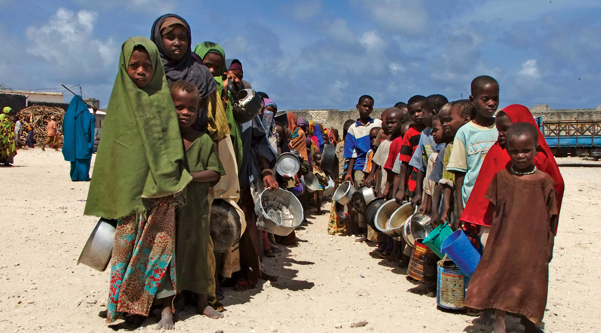
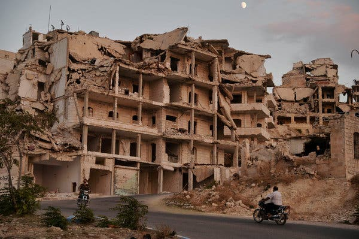

The most common categorizations and information viewed on people suffering from famines is the area, the amount of people, and the duration of such a crisis. Though this is vital information to understand, many times we overlook the true suffering of people in these circumstances. When a lack of food is persistent, it causes one’s pulse rate to slow drastically, blood pressure to fall, and heart muscles begin to atrophy. This process continues until organs such as the brain begin to get affected, in turn affecting the clarity of one’s speech and hearing. A loss of 15-20% of body weight is when the victim begins to enter a stage of semi-starvation, being rendered incapable of much at all.
Crises have augmented to such a horrible extent in the past that food rations were only supplied to those who had lost up to 33% of their body weight, such as in the case of the Dutch Famine. Similar symptoms are found in cases of dehydration, with additional lowered cognitive function, mood issues, which eventually may lead to a shrink in brain size. Today, in 2019, no one should have to suffer to such an extent, but sadly, this is still widely common within certain developing nations. The improvement of food and water supplies, along with efficient conservation method of these resources, can have several chain effects, most prevalently economic growth and the reduction of poverty.
Now the question must be posed: where are famine and water crises the most prevalent and what are the underlying causes for it? The African nations which fall under the geographical term known as the “Horn of Africa”, are currently at the mercy of their geographical location, experiencing severe droughts which in effect present the countries within with little arable soil and crops. Inversely, some areas within the Horn of Africa happen to be suffering from severe floodingㅡthe worst it has been in the past 30 years.
According to Oxfam, over 15 million people are currently facing acute food and water supply crises within this geographical location. This issue isn’t restricted to limited parts of the world: the World Health Organization estimates that over 2 billion people drink water contaminated with faeces and excrementㅡnearly comparable to the ranks of sewage. This water can transmit diseases such as polio, colera, typhoid, and dysentery. It is clear that today, the first steps we can take as humanity to solve global issues is to provide everyone with the methods to survive: sustenance.
Every individual is entitled to the same rights as any other human beings. One’s race, religion, age, gender, sexual orientation or any other class division should never serve as the sole basis for systematic discrimination. When discrimination is enforced by law rather than by societal standards or stereotypes, this begins to infringe on basic human rights and forms a humanitarian crisis. Inequality begins when certain communities of people living within a society are denied equal civil rights, freedoms, property rights and some social services that others not within this community are granted.

Unfortunately, various countries in defined, particular regions across the world are infringing inalienable rights in government-enforced, systematic terms to match their agendas. One of the main standards of equality is the equality in opportunityㅡno certain groups should have a higher chance in gaining power, social prestige, and wealth, so as to say no one should receive a head start over others. As put in the terms of American sociologist Dalton Conley, a standard example of equality is like a game of Monopolyㅡeveryone begins at a single starting point, has an equal chance at winning, though certain fall victim to chance and circumstance.
The country with the worst gender equality to date, as cited by the National Geographic, are Yemen, Syria and Afghanistan. All three countries are currently under humanitarian crises, making world headlines as war-stricken nations with an outflow of refugees. In Yemen, for example, only 49% of women are literate compared to 82% of the male population. Forced marriage is highly common, as is rape, sexual harassment, and the deprivation of various natural rights such as healthcare and education. Rural, lower-class women are forced to carry out intense labor, are subject to extreme violence and are by far the most oppressed class division in Yemeni society.
War is the armed conflict between societies, states, governments and/or belligerents, categorized by extreme violence. Since the beginning of humanity, humans have engaged in armed conflictㅡwhich with the development of states and civilization, evolved into warㅡand many assign it to be solely a character of human nature. American author Conway W. Henderson estimates that approximately 3.5 billion humans have lost their lives at the hands of war spanning between the duration of 3500 B.C. to the present date. Thankfully, in our modern world, the majority of societies are anti-war, and due to the various and vast levels of diplomacy and interconnection, we are living in a time where war is one of our least concerns.
Humanity has progressed a long way since then and we look to our past mistakes in order for history not to repeat itself. Education, along with various other peace-promoting factors are at their peak, producing more concerned citizens that value statesmanship over aggression and hate. This, of course, is not the case throughout the entire world, and various countries, once more in a specifiable geographical location are often liable for their differing conflicts. Today, major scale state-to-state war for resource-related, economic purposes is nearly non-existent, however, internal conflicts such as rebellions and revolutions are becoming commonplace in oppressive countries.
The Middle East is often cited as a geographical location which has some of the most egregious regimes and widespread war. Afghanistan is currently the most dangerous country to inhabit, especially living as an oppressed visible minority to the likes of women or Hazaras, an ethnic group with defined physical features, believed to be of Turkic-Mongol descent. However, by more defined collected data in 2017, Syria has been inflexibly placed as the country with the worst humanitarian crisis. A believed 5 million international Syrian refugees have sought refuge across the globe, the root cause being the tyrannical regime under which they lived. The situation has and continues to deteriorate in Syria to such an extent that crucifixion is listed as one of the torture methods of the regime against outspeakers and political rivals.
Another country on the brink of collapse is the state of Yemen. Due to the political instability, an estimate of 16-18 million have been left without access to reliable sources of food and water. The country is being overrun by famine and is currently experiencing the worst cholera outbreak in recorded history. International organizations such as the United Nations are viewing the situation in Yemen, deploying observers, and officializing the Hodeidah agreement that orders cease-fire in key cities. These, however, are very little steps that require much support in achieving their intended goalㅡtrue peace and stability.
HTML Validated